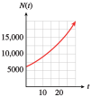
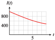
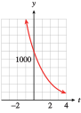
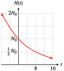

Exercises 4.8 Homework 5.3
¶For Problems 1-4, use your calculator to complete the table for each function. Then choose a suitable window and graph the function.
| \(x\) | \(-10\) | \(-5\) | \(0\) | \(5\) | \(10\) | \(15\) | \(20\) |
| \(f(x)\) | \(\hphantom{0000}\) | \(\hphantom{0000}\) | \(\hphantom{0000}\) | \(\hphantom{0000}\) | \(\hphantom{0000}\) | \(\hphantom{0000}\) | \(\hphantom{0000}\) |
1.
\(f(x)=e^{0.2x} \)
| \(x\) | \(-10\) | \(-5\) | \(0\) | \(5\) | \(10\) | \(15\) | \(20\) |
| \(f(x)\) | \(0.135\) | \(0.368\) | \(1\) | \(2.718\) | \(7.389\) | \(20.086\) | \(54.598\) |

2.
\(f(x)=e^{0.6x} \)
3.
\(f(x)= e^{-0.3x} \)
| \(x\) | \(-10\) | \(-5\) | \(0\) | \(5\) | \(10\) | \(15\) | \(20\) |
| \(f(x)\) | \(20.086\) | \(4.482\) | \(1\) | \(0.223\) | \(0.05\) | \(0.011\) | \(0.00248\) |
4.
\(f(x)=e^{-0.1x} \)
For Problems 5-6, simplify.
5.
\(\ln e^2\)
\(e^{\ln 5t} \)
\(e^{-\ln x} \)
\(\ln \sqrt{e} \)
\(2\)
\(5t\)
\(\dfrac{1}{x} \)
\(\dfrac{1}{2} \)
6.
\(\ln e^{x^4}\)
\(e^{3 \ln x} \)
\(e^{\ln x -\ln y} \)
\(\ln \left(\dfrac{1}{e^{2t}} \right) \)
For Problems 7-10, solve for \(x\text{.}\) Round your answers to two decimal places.
11.
The number of bacteria in a culture grows according to the function
where \(N_0\) is the number of bacteria present at time \(t = 0\) and \(t\) is the time in hours.
Write a growth law for a sample in which \(6000\) bacteria were present initially.
Make a table of values for \(N(t)\) in \(5\)-hour intervals over the first \(30\) hours.
Graph \(N(t) \text{.}\)
How many bacteria were present at \(t = 24\) hours?
How much time must elapse (to the nearest tenth of an hour) for the original \(6000\) bacteria to increase to \(100,000\text{?}\)
\(N(t)=6000e^{0.04t} \)
\(t\) \(0\) \(5\) \(10\) \(15\) \(20\) \(25\) \(30\) \(N(t)\) \(6000\) \(7328\) \(8951\) \(10,933\) \(13,353\) \(16,310\) \(19,921\) - 
\(15,670\)
\(70.3\) hrs
12.
Hope invests \(\$2000\) in a savings account that pays \(5\frac{1}{2}\%\) annual interest compounded continuously.
Write a formula that gives the amount of money \(A(t)\) in Hope’s account after \(t\) years.
Make a table of values for \(A(t)\) in \(2\)-year intervals over the first \(10\) years.
Graph \(A(t) \text{.}\)
How much will Hope's account be worth after \(7\) years?
How long will it take for the account to grow to \(\$5000\text{?}\)
13.
The intensity, \(I\) (in lumens), of a light beam after passing through \(t\) centimeters of a filter having an absorption coefficient of \(0.1\) is given by the function
Graph \(I (t)\text{.}\)
What is the intensity (to the nearest tenth of a lumen) of a light beam that has passed through \(0.6\) centimeter of the filter?
How many centimeters (to the nearest tenth) of the filter will reduce the illumination to \(800\) lumens?
- 
\(941.8\) lumens
\(2.2\) cm
14.
X-rays can be absorbed by a lead plate so that
where \(I_0\) is the X-ray count at the source and \(I (t)\) is the X-ray count behind a lead plate of thickness \(t\) inches.
Graph \(I (t)\text{.}\)
What percent of an X-ray beam will penetrate a lead plate \(\frac{1}{2}\) inch thick?
How thick should the lead plate be in order to screen out \(70\%\) of the X-rays?
For problems 15-18, express each exponential function in the form \(P(t) = P_0b^t\text{.}\) Is the function increasing or decreasing? What is itsinitial value?
15.
\(P(t) = 20e^{0.4t}\)
\(P (t) = 20\left(e^{0.4} \right)^t \approx 20\cdot 1.492^t\text{;}\) increasing; initial value \(20\)
16.
\(P(t)=0.8 e^{1.3t} \)
17.
\(P(t) = 6500e^{-2.5t}\)
\(P (t) = 6500\left(e^{-2.5} \right)^t \approx 6500\cdot 0.082^t\text{;}\) decreasing; initial value \(6500\)
18.
\(P(t)=1.7 e^{-0.02t} \)
19.
-
Fill in the table, rounding your answers to four decimal places.
\(x\) \(0\) \(0.5\) \(1\) \(1.5\) \(2\) \(2.5\) \(e^x\) \(\phantom{000} \) \(\phantom{000}\) \(\phantom{000}\) \(\phantom{000}\) \(\phantom{000}\) \(\phantom{000}\) Compute the ratio of each function value to the previous one. Explain the result.
\(x\) \(0\) \(0.5\) \(1\) \(1.5\) \(2\) \(2.5\) \(e^x\) \(1 \) \(1.6487\) \(2.7183\) \(4.4817\) \(7.3891\) \(12.1825\) Each ratio is \(e^{0.5} \approx 1.6487\text{:}\) Increasing \(x\)-values by a constant \(\Delta x = 0.5\) corresponds to multiplying the \(y\)-values of the exponential function by a constant factor of \(e^{\Delta x}\text{.}\)
20.
-
Fill in the table, rounding your answers to four decimal places.
\(x\) \(0\) \(2\) \(4\) \(6\) \(8\) \(10\) \(e^x\) \(\phantom{000} \) \(\phantom{000}\) \(\phantom{000}\) \(\phantom{000}\) \(\phantom{000}\) \(\phantom{000}\) Compute the ratio of each function value to the previous one. Explain the result.
21.
-
Fill in the table, rounding your answers to the nearest integer.
\(x\) \(0\) \(0.6931\) \(1.3863\) \(2.0794\) \(2.7726\) \(3.4657\) \(4.1589\) \(e^x\) \(\phantom{000} \) \(\phantom{000}\) \(\phantom{000}\) \(\phantom{000}\) \(\phantom{000}\) \(\phantom{000}\) \(\phantom{000}\) Subtract each \(x\)-value from the next one. Explain the result.
\(x\) \(0\) \(0.6931\) \(1.3863\) \(2.0794\) \(2.7726\) \(3.4657\) \(4.1589\) \(e^x\) \(1 \) \(2\) \(4\) \(8\) \(16\) \(32\) \(64\) Each difference in \(x\)-values is approximately \(\ln 2\approx 0.6931\text{:}\) Increasing \(x\)-values by a constant \(\Delta x = \ln 2\) corresponds to multiplying the \(y\)-values of the exponential function by a constant factor of \(e^{\Delta x} = e^{\ln 2} = 2\text{.}\) That is, each function value is approximately equal to double the previous one.
22.
-
Fill in the table, rounding your answers to the nearest integer.
\(x\) \(0\) \(1.0986\) \(2.1972\) \(3.2958\) \(4.3944\) \(5.4931\) \(6.5917\) \(e^x\) \(\phantom{000} \) \(\phantom{000}\) \(\phantom{000}\) \(\phantom{000}\) \(\phantom{000}\) \(\phantom{000}\) \(\phantom{000}\) Subtract each \(x\)-value from the next one. Explain the result.
For Problems 23–30, solve. Round your answers to two decimal places.
23.
\(6.21 = 2.3e^{1.2x}\)
\(0.8277\)
24.
\(22.26 = 5.3e^{0.4x}\)
25.
\(6.4 = 20e^{0.3x} - 1.8 \)
\(-2.9720\)
26.
\(4.5 = 4e^{2.1x} + 3.3 \)
27.
\(46.52 = 3.1e^{1.2x} + 24.2 \)
\(1.6451\)
28.
\(1.23 = 1.3e^{2.1x} - 17.1 \)
29.
\(16.24 = 0.7e^{-1.3x} - 21.7 \)
\(-3.0713\)
30.
\(55.68 = 0.6e^{-0.7x} + 23.1 \)
For Problems 31-36, solve the equation for the specified variable.
31.
\(y = e^{kt},~~\) for \(t\)
\(t=\dfrac{1}{k}\ln y \)
32.
\(\dfrac{T}{R} = e^{t/2},~~\) for \(t\)
33.
\(y = k(1-e^{-t}),~~\) for \(t\)
\(t=\ln \left(\dfrac{k}{k-y}\right) \)
34.
\(B - 2 = (A + 3)e^{-t/3},~~\) for \(t\)
35.
\(T = T_0 \ln(k + 10),~~\) for \(k\)
\(k=e^{T/T_0}-10 \)
36.
\(P = P_0 + \ln 10k,~~\) for \(k\)
37.
-
Fill in the table, rounding your answers to three decimal places.
\(n\) \(0.39\) \(3.9\) \(39\) \(390\) \(\ln n\) \(\hphantom{0000} \) \(\hphantom{0000} \) \(\hphantom{0000} \) \(\hphantom{0000} \) Subtract each natural logarithm in your table from the next one. (For example, compute \(\ln 3.9 - \ln 0.39\text{.}\)) Explain the result.
\(n\) \(0.39\) \(3.9\) \(39\) \(390\) \(\ln n\) \(-0.942 \) \(1.361 \) \(3.664 \) \(5.966 \) Each difference in function values is approximately \(\ln 10\approx 2.303\text{:}\) Multiplying \(x\)-values by a constant factor of \(10\) corresponds to adding a constant value of ln 10 to the \(y\)-values of the natural log function.
38.
-
Fill in the table, rounding your answers to three decimal places.
\(n\) \(0.64\) \(6.4\) \(64\) \(640\) \(\ln n\) \(\hphantom{0000} \) \(\hphantom{0000} \) \(\hphantom{0000} \) \(\hphantom{0000} \) Subtract each natural logarithm in your table from the next one. (For example, compute \(\ln 6.4 - \ln 0.64\text{.}\)) Explain the result.
39.
-
Fill in the table, rounding your answers to three decimal places.
\(n\) \(2\) \(4\) \(8\) \(16\) \(\ln n\) \(\hphantom{0000} \) \(\hphantom{0000} \) \(\hphantom{0000} \) \(\hphantom{0000} \) Divide each natural logarithm in your table by \(\ln 2\text{.}\) Explain the result.
\(n\) \(2\) \(4\) \(8\) \(16\) \(\ln n\) \(0.693 \) \(1.386 \) \(2.079 \) \(2.773 \) Each quotient equals \(k\text{,}\) where \(n = 2^k\text{.}\) Because \(\ln n = \ln 2^k = k\cdot \ln 2\text{,}\) \(k = \dfrac{\ln n}{\ln 2}\text{.}\)
40.
-
Fill in the table, rounding your answers to three decimal places.
\(n\) \(5\) \(25\) \(125\) \(625\) \(\ln n\) \(\hphantom{0000} \) \(\hphantom{0000} \) \(\hphantom{0000} \) \(\hphantom{0000} \) Divide each natural logarithm in your table by \(\ln 5\text{.}\) Explain the result.
For Problems 41–46,
Express each growth or decay law in the form \(N(t) = N_0e^{kt}\text{.}\)
Check your answer by graphing both forms of the function on the same axes. Do they have the same graph?
41.
\(N(t) = 100\cdot 2^t\)
\(N (t) = 100e^{(\ln 2)t}\approx 100e^{0.6931t}\)

42.
\(N(t) = 50\cdot 3^t\)
43.
\(N(t) = 1200(0.6)^t\)
\(N (t) = 1200e^{(\ln 0.6)t}\approx 1200e^{-0.5108t}\)
- 
44.
\(N(t) = 300(0.8)^t\)
45.
\(N(t) = 10(1.15)^t\)
\(N (t) = 10e^{(\ln 1.15)t}\approx 10e^{0.1398t}\)

46.
\(N(t) = 1000(1.04)^t\)
47.
The population of Citrus Valley was \(20,000\) in \(2000\text{.}\) In \(2010\text{,}\) it was \(35,000\text{.}\)
What is \(P_0\) if \(t = 0\) in \(2000\text{?}\)
Use the population in \(2010\) to find the growth factor \(e^k\text{.}\)
Write a growth law of the form \(P(t) = P_0 e^{kt}\) for the population of Citrus Valley.
If it continues at the same rate of growth, what will the population be in \(2030\text{?}\)
\(20,000\)
\(\left(\dfrac{35,000}{20,000} \right)^{1/10}\approx e^{0.056} \)
\(P(t) = 20,000e^{0.056t} \)
\(107,188\)
48.
A copy of Time magazine cost $\(1.50\) in \(1981.~\) In \(1988\text{,}\) the cover price had increased to $\(2.00\text{.}\)
What is \(P_0\) if \(t = 0\) in \(1981\text{?}\)
Use the price in \(1988\) to find the growth factor \(e^k\text{.}\)
Find a growth law of the form \(P(t) = P_0e^{kt}\) for the price of Time.
In \(1999\text{,}\) a copy of Time cost $\(3.50\text{.}\) Did the price of the magazine continue to grow at the same rate from \(1981\) to \(1999\text{?}\)
49.
Cobalt-60 is a radioactive isotope used in the treatment of cancer. A \(500\)-milligram sample of cobalt-60 decays to \(385\) milligrams after \(2\) years.
Using \(P_0 = 500\text{,}\) find the decay factor \(e^k\) for cobalt-60.
Write a decay law \(N(t) = N_0e^{kt}\) for cobalt-60.
How much of the original sample will be left after \(10\) years?
\(\left(\dfrac{385}{500} \right)^{1/2}\approx e^{-0.1307} \)
\(N(t) = 500e^{-0.1307t} \)
\(135.3\) mg
50.
Weed seeds can survive for a number of years in the soil. An experiment on cultivated land found \(155\) million weed seeds per acre, and in the following years the experimenters prevented the seeds from coming to maturity and producing new weeds. Four years later, there were \(13.6\) million seeds per acre. (Source: Burton, 1998)
Find the annual decay factor \(e^k\) for the number of weed seeds in the soil.
Write an exponential formula with base \(e\) for the number of weed seeds that survived after \(t\) years.
Problems 51–58 are about doubling time and half-life.
51.
Delbert invests $\(500\) in an account that pays \(9.5\%\) interest compounded continuously.
Write a formula for \(A(t)\) that gives the amount of money in Delbert's account after \(t\) years.
How long will it take Delbert's investment to double to $\(1000\text{?}\)
How long will it take Delbert's money to double again, to $\(2000\text{?}\)
Graph \(A(t)\) and illustrate the doubling time on your graph.
Choose any point \((t_1, A_1)\) on the graph, then find the point on the graph with vertical coordinate \(2A_1\text{.}\) Verify that the difference in the \(t\)-coordinates of the two points is the doubling time.
\(A(t) = 500e^{0.095t}\)
\(7.3\) years
\(7.3\) years
d–e
52.
The growth of plant populations can be measured by the amount of pollen they produce. The pollen from a population of pine trees that lived more than \(9500\) years ago in Norfolk, England, was deposited in the layers of sediment in a lake basin and dated with radiocarbon techniques.

The figure shows the rate of pollen accumulation plotted against time, and the fitted curve \(P(t) = 650e^{0.00932t}\text{.}\) (Source: Burton, 1998)
What was the annual rate of growth in pollen accumulation?
Find the doubling time for the pollen accumulation, that is, the time it took for the accumulation rate to double.
By what factor did the pollen accumulation rate increase over a period of \(500\) years?
53.
Technetium-99m (Tc-99m) is an artificially produced radionuclide used as a tracer for producing images of internal organs such as the heart, liver, and thyroid. A solution of Tc-99m with initial radioactivity of \(10,000\) becquerels (Bq) decays according to the formula
where \(t\) is in hours.
How long will it take the radioactivity to fall to half its initial value, or \(5000\) Bq?
How long will it take the radioactivity to be halved again?
Graph \(N(t)\) and illustrate the half-life on your graph.
Choose any point \((t_1, N_1)\) on the graph, then find the point on the graph with vertical coordinate \(0.5N_1\text{.}\) Verify that the difference in the \(t\)-coordinates of the two points is the half-life.
\(6\) hours
\(6\) hours
54.
All living things contain a certain amount of the isotope carbon-14. When an organism dies, the carbon-14 decays according to the formula
where \(t\) is measured in years. Scientists can estimate the age of an organic object by measuring the amount of carbon-14 remaining.
When the Dead Sea scrolls were discovered in 1947, they had \(78.8\%\) of their original carbon-14. How old were the Dead Sea scrolls then?
What is the half-life of carbon-14, that is, how long does it take for half of an object's carbon-14 to decay?
55.
The half-life of iodine-131 is approximately \(8\) days.
If a sample initially contains \(N_0\) grams of iodine-131, how much will it contain after \(8\) days? How much will it contain after \(16\) days? After \(32\) days?
Use your answers to part (a) to sketch a graph of \(N(t)\text{,}\) the amount of iodine-131 remaining, versus time. (Choose an arbitrary height for \(N_0\) on the vertical axis.)
Calculate \(k\text{,}\) and hence find a decay law of the form \(N(t) = N_0e^{kt}\text{,}\) where \(k \lt 0\text{,}\) for iodine-131.
\(\frac{1}{2}N_0 \text{,}\) \(\frac{1}{4}N_0 \text{,}\) \(\frac{1}{16}N_0\)
- 
\(N (t) = N_0e^{-0.0866t}\)
56.
The half-life of hydrogen-3 is \(12.5\) years.
If a sample initially contains \(N_0\) grams of hydrogen-3, how much will it contain after \(12.5\) years? How much will it contain after \(25\) years?
Use your answers to part (a) to sketch a graph of \(N(t)\text{,}\) the amount of hydrogen-3 remaining, versus time. (Choose an arbitrary height for \(N_0\) on the vertical axis.)
Calculate \(k\text{,}\) and hence find a decay law of the form \(N(t) = N_0e^{kt}\text{,}\) where \(k\lt 0\text{,}\) for hydrogen-3.
57.
A Geiger counter measures the amount of radioactive material present in a substance. The table shows the count rate for a sample of iodine-128 as a function of time. (Source: Hunt and Sykes, 1984)
| Time (min) | \(0\) | \(10\) | \(20\) | \(30\) | \(40\) | \(50\) | \(60\) | \(70\) | \(80\) | \(90\) |
| Counts/sec | \(120\) | \(90\) | \(69\) | \(54\) | \(42\) | \(33\) | \(25\) | \(19\) | \(15\) | \(13\) |
Graph the data and use your calculator's exponential regression feature to fit a curve to them.
Write your equation in the form \(G(t) = G_0e^{kt}\text{.}\)
Calculate the half-life of iodine-128.
-

\(y = 116 (0.975)^t\)
\(G (t) = 116e^{-0.025t}\)
\(28\) minutes
58.
The table shows the count rate for sodium-24 registered by a Geiger counter as a function of time. (Source: Hunt and Sykes, 1984)
| Time (min) | \(0\) | \(10\) | \(20\) | \(30\) | \(40\) | \(50\) | \(60\) | \(70\) | \(80\) | \(90\) |
| Counts/sec | \(180\) | \(112\) | \(71\) | \(45\) | \(28\) | \(18\) | \(11\) | \(7\) | \(4\) | \(3\) |
Graph the data and use your calculator's exponential regression feature to fit a curve to them.
Write your equation in the form \(G(t) = G_0e^{kt}\text{.}\)
Calculate the half-life of sodium-24.